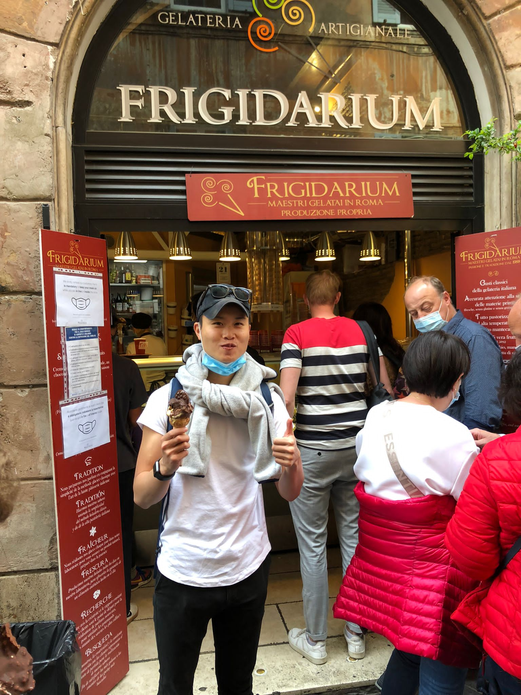
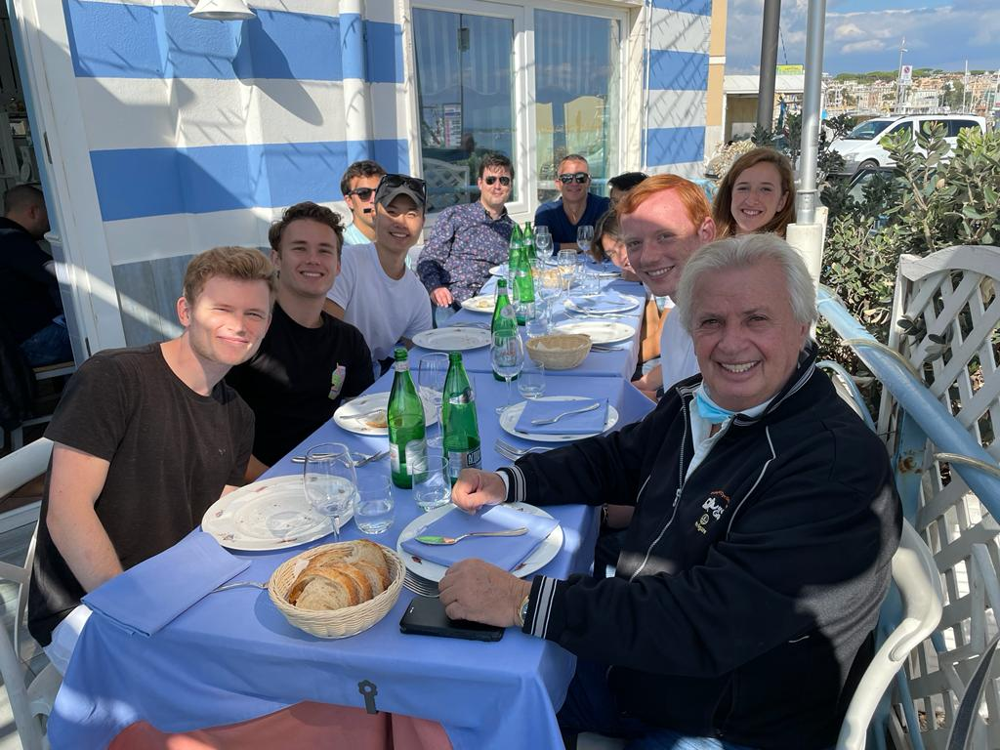
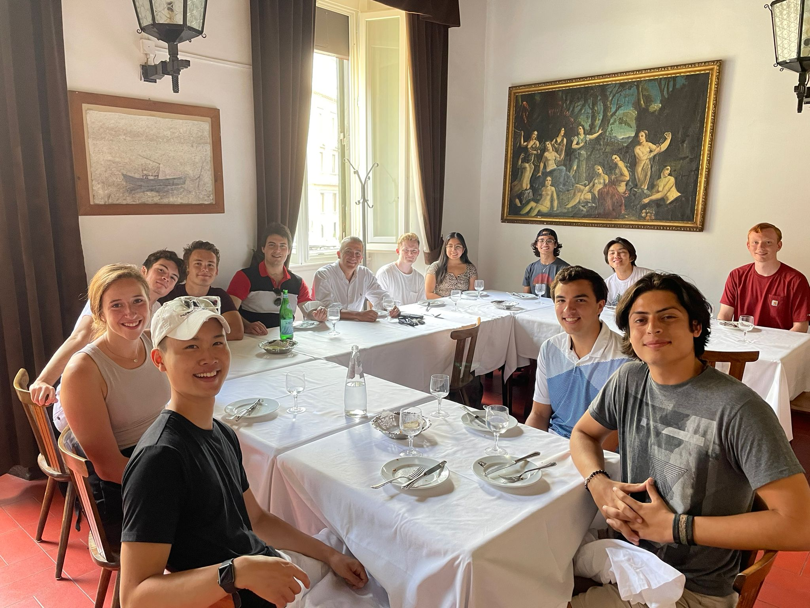

About Me
I'm currently studying abroad in Rome, Italy during Fall 2021. This trip inspired me to create an Italian food themed page! I've absolutely loved being imemrsed in Italian culture, and much of the culture revolves around food! My favorite foods thus far have been different kinds of pasta, pizza and (most importantly) gelato!



My Qualifications
- Ratatouille just might be my favorite movie of all time
- I can speak a tiny bit of Italian so that maybe translates to Italian cooking?
- I've been cooking for myself for a couple years now
- I consider myself an expert at making Trader Joes' frozen meals
- I'm really not qualified to tell people how to make these dishes so take my advice with a grain of salt...